numpy实战（高级编程技术week 11）
做题前
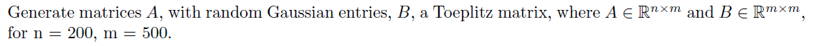
在这里，我使用了这样的代码来产生符合题目条件的矩阵
1 | import numpy as np |
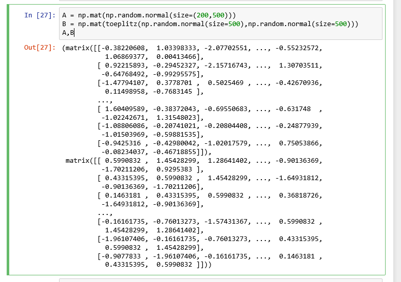
第一题
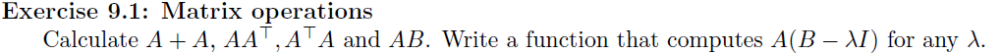
这里还是一些比较简单正常的计算，代码如下
1 | a1 = A + A |
结果如下：
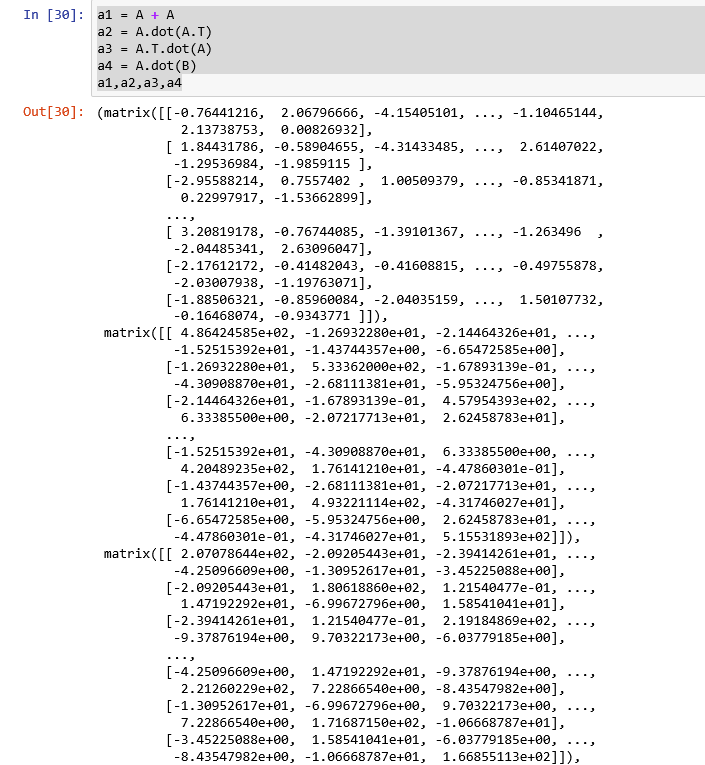
同时，根据题目要求，我还写了这样的一个函数，并且测试了一下。
1 | def t1(lamda): |
结果如图所示
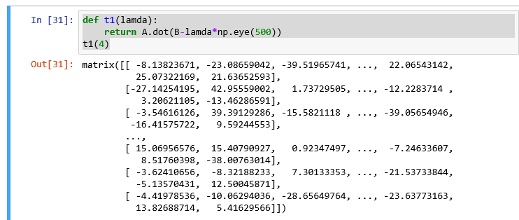
第二题
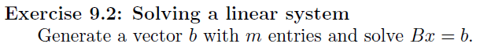
首先使用np.random.normal函数生成这样的向量，为了求解该方程，可以考虑方程左右两边同时乘上矩阵$B$的逆，即$x = B’b$。
1 | b = np.random.normal(size=(500,1)) |
结果如下
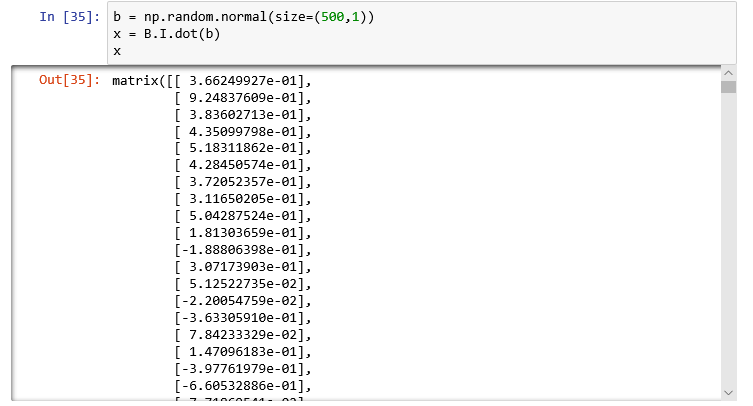
问题三：范数
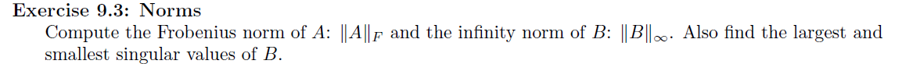
这一道题主要考虑的是np.linalg.norm函数的使用。
查阅文档得知，该函数的原型为numpy.linalg.norm(x, ord=None, axis=None, keepdims=False)同时参数的功能如下表：
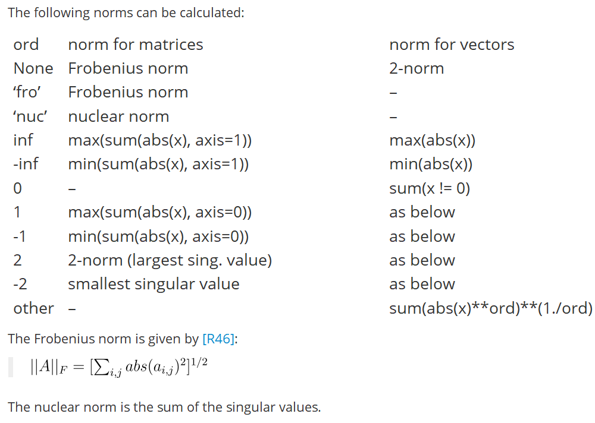
由此，可以写出这道题的代码
1 | np.linalg.norm(A, ord='fro') # Frobenius norm |
结果可见
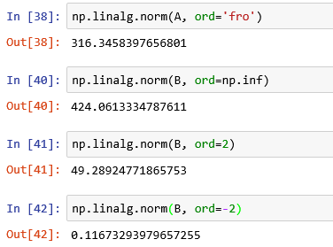
问题四
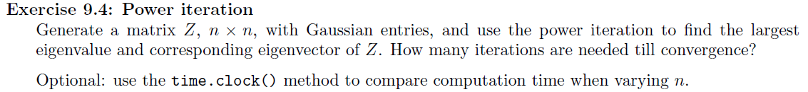
关于这个幂迭代法求解矩阵的特征向量，我使用了以下代码来实现。
1 | def power_iteration(A, error): |
在进一步的测试中，验证了该程序的正确性。
我计算了$\begin{bmatrix} -4 & 14 & 0 \ -5 & 13 & 0 \ -1 & 0 & 2 \end{bmatrix} $该矩阵的特征值和特征向量，与自己算的值是一致的。见下图：
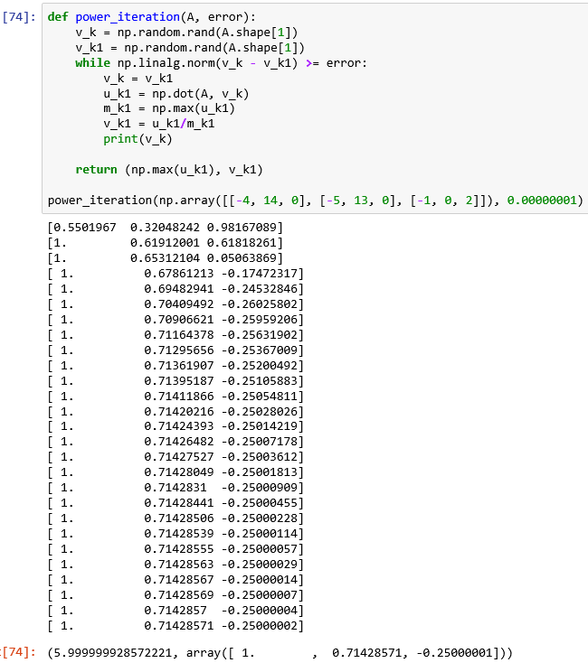
问题五
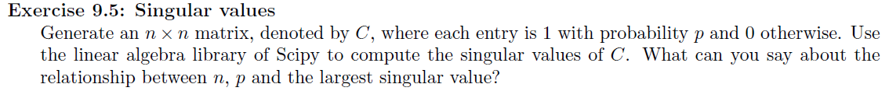
这里需要探寻$n$, $p$,还有最大奇异值之间的关系。从scipy的文档中找到关于求奇异值的函数：scipy.linalg.svd(C),其中第二个返回值就是奇异值列表。
1 | from scipy import linalg |
通过实验，得知，当n渐渐变大时，最大奇异值也在变大
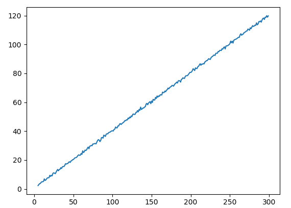
当p变小的时候，最大奇异值变小，如下图
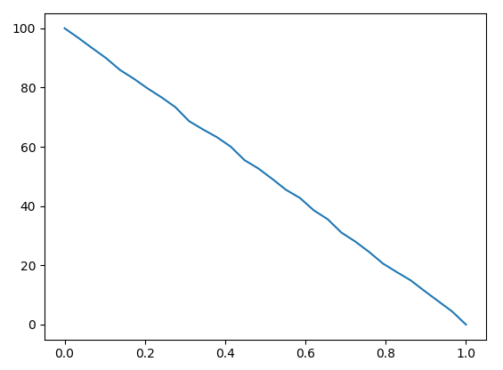
问题六

这里要写一个函数，去寻找数据A中最接近$z$的数，函数需要返回最接近的值，以下是代码实现。
1 | def find_nearest(A, z): |
以下是运行截图：
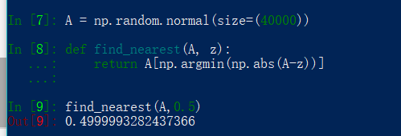